The conference was held virtually via Zoom on Saturday, 6 November 2021.
Download the program from Fall 2021 Program.
Field trips took place on Sunday.
Presentations
The videos are on our new YouTube channel.
Thanks go to Matt Adams for editing them.
View the publicly viewable videos on the NEARA Fall Conference 2021 playlist.
Videos that are only available for NEARA members are behind a login at sitedb.org.
Converging Lines of Evidence on Council Rock Mountain, Dave Gutkowski & Tom Elmore
This is only available for NEARA members by logging in at sitedb.org
There were 7 field trips scheduled for the next day.
Everyone really enjoyed the great weather and interesting sights and meeting new people.
Here are some photos from those field trips:
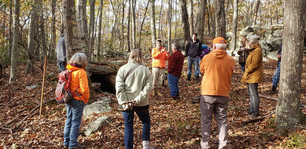
Connecticut, New London County: Gungywamp, by Harvey BufordConnecticut, New London County: Gungywamp, by Harvey Buford
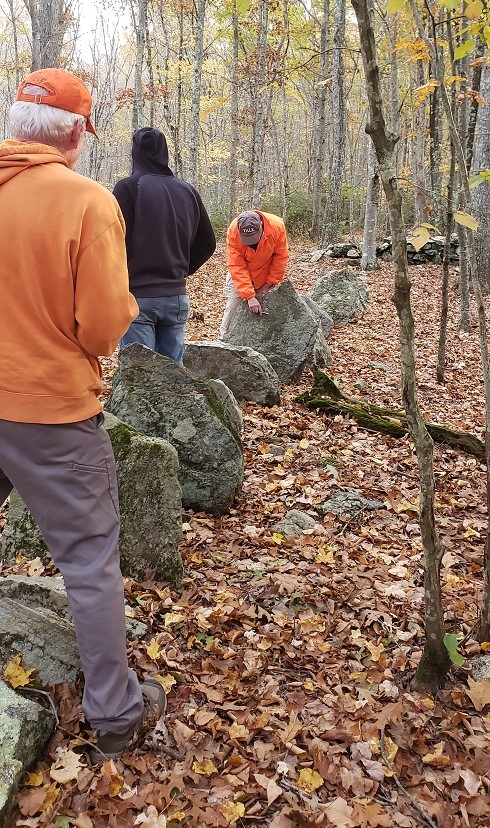
Connecticut, New London County: Gungywamp, by Harvey BufordMassachusetts, Worcester County: Rock House, by Peter AnickMassachusetts, Worcester County: Rock House, by Peter Anick
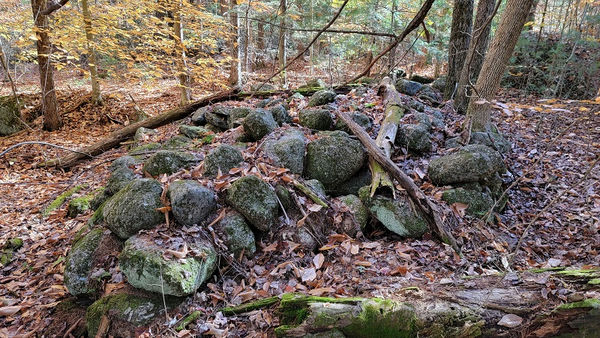
New Hampshire, Hillsborough County: Fox Forest, by Walter van Roggen
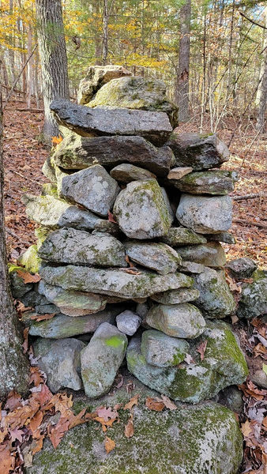
New Hampshire, Hillsborough County, by Walter van Roggen
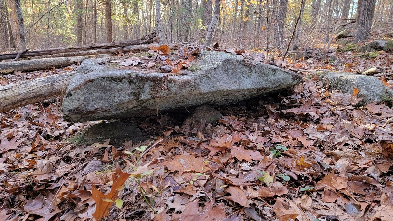
New Hampshire, Hillsborough County, by Walter van Roggen
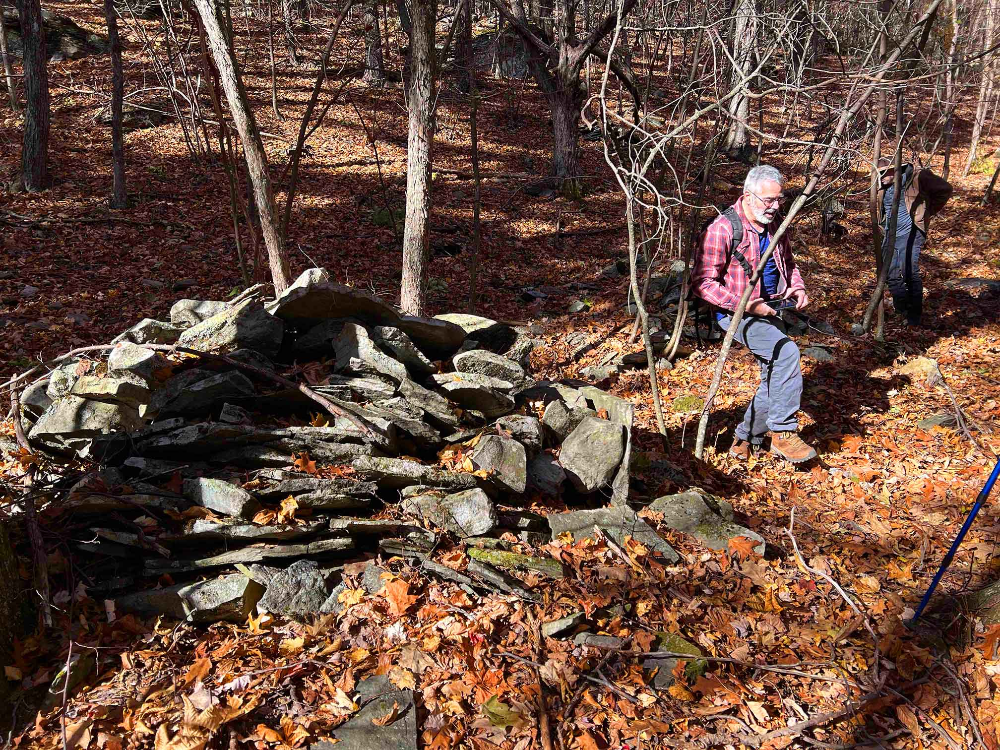
New York, Ulster County: Lewis Hollow, by Matt Adams
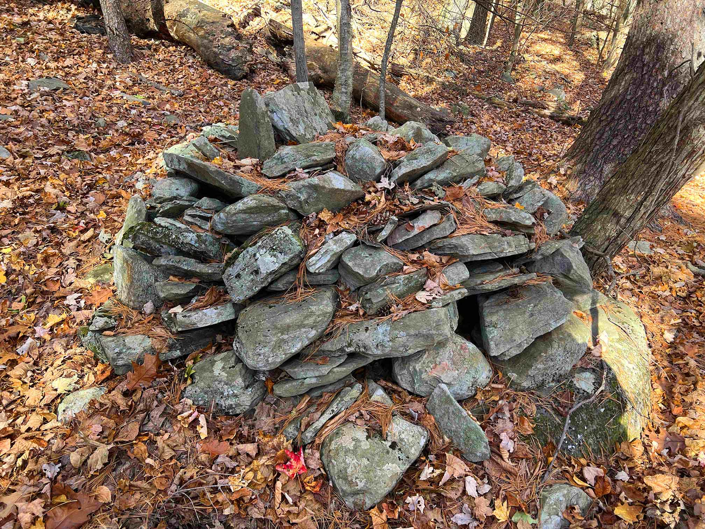
New York, Ulster County: Lewis Hollow, by Matt Adams
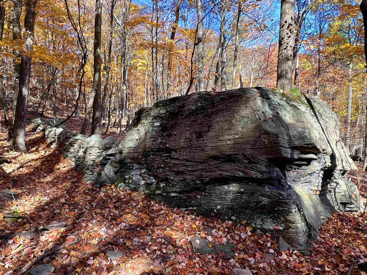
New York, Ulster County: Lewis Hollow, by Matt Adams
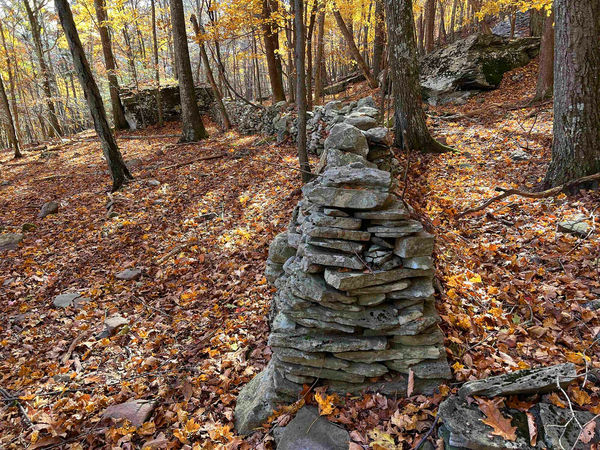
New York, Ulster County: Lewis Hollow, by Matt Adams
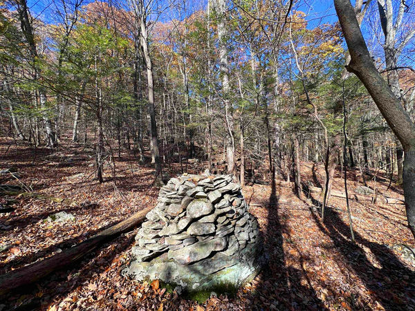
New York, Ulster County: Lewis Hollow, by Matt Adams
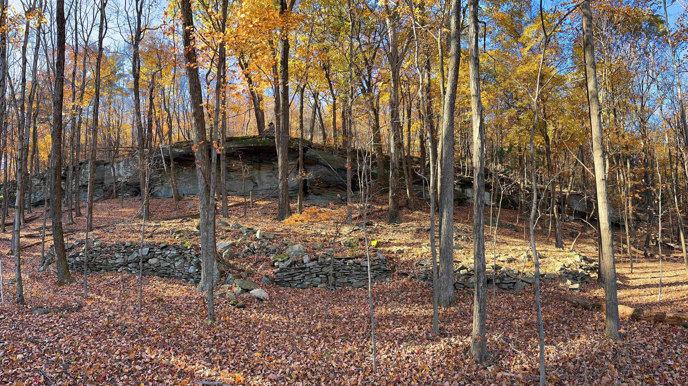
New York, Ulster County: Lewis Hollow, by Matt Adams
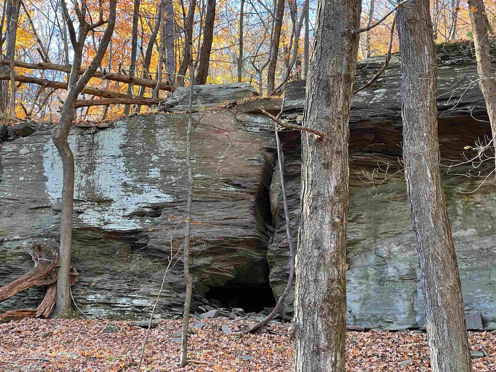
New York, Ulster County: Lewis Hollow, by Matt Adams